Freie Software · Open Source · läuft ohne Netz
MASCHERA maskiert Personendaten in Schweizer DokumentenDas geschieht auf deinem Gerät, immer lokal, ohne Netzwerkverbindung!
Du hast ein Schreiben, einen Mailverlauf oder ein PDF und willst ein KI-Werkzeug dazu befragen. Die Namen, AHV-Nummern und Adressen sollen dabei aber nicht mitgehen.
Herunterladen Wie es funktioniert
Vorher
Nachher
Den maskierten Text gibst du dem Dienst deiner Wahl. Die Antwort fügst du zurück ein, und MASCHERA setzt die echten Werte wieder ein.
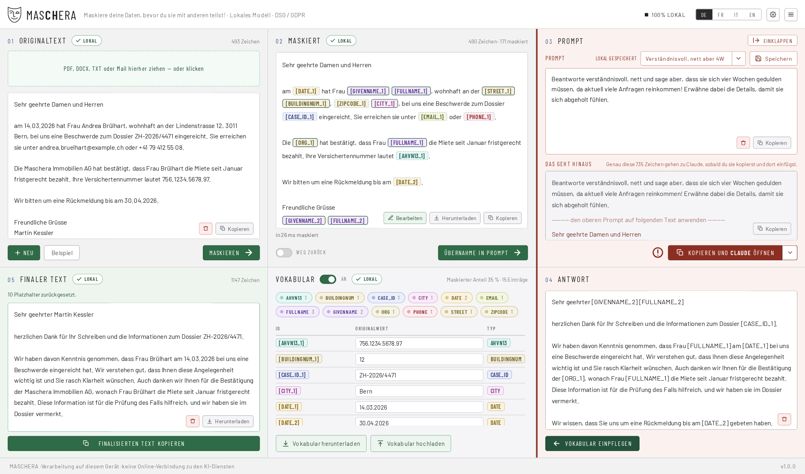
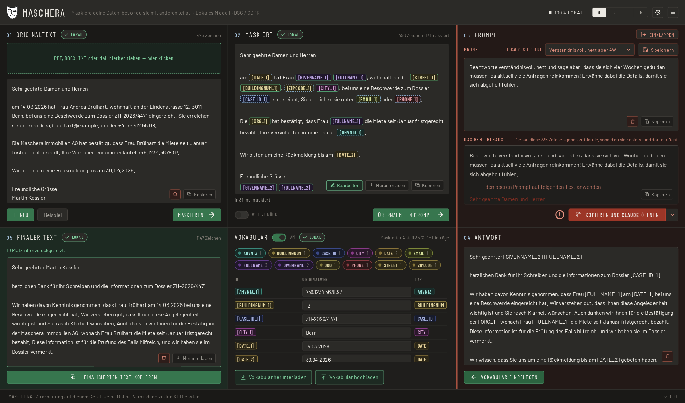
Vier Merkmale
Was das Werkzeug ausmacht
Es läuft auf deinem Gerät
Die ganze Erkennung läuft lokal. Im Betrieb wird nichts nachgeladen und nichts gesendet: keine Schriften, keine Symbole, keine Statistik. Einen Endpunkt, der Text verschickt, gibt es nicht und wird es nicht geben. Der Weg nach draussen führt immer über deine Zwischenablage.
Es schreibt nichts auf
Gespeichert werden nur deine eigenen Einstellungen, also Regeln, Vorlagen und Vorlieben. Auch diese werden nur auf ausdrücklichen Befehl gespeichert. Kein Dokumentinhalt, kein Wörterbuch, kein Protokoll.
Umkehrbar, und das ist der Sinn
Du maskierst, fragst, und fügst die Antwort zurück ein: MASCHERA setzt die echten Werte wieder ein. Deshalb heisst es Pseudonymisierung und nicht Anonymisierung. Solange das Wörterbuch existiert, ist der Vorgang umkehrbar, und die Daten bleiben nach revDSG Personendaten.
Für Schweizer Dokumente gebaut
Erkannt werden AHV-Nummer, UID, IBAN, QR-Referenz, Gebäude- und Wohnungsidentifikator, Ausweiskategorie, Kontrollschild und ZSR-Nummer, jeweils mit den zugehörigen Prüfsummen.
45 Merkmalsarten insgesamt. Vier Sprachen: Deutsch, Französisch, Italienisch und Englisch.
Der Ablauf
Fünf Schritte
Dokument öffnen bzw. reinziehen oder Text einfügen
Gelesen werden .pdf, .docx, .eml, .msg (Outlook), .mbox, .txt, .md, .csv, .json.
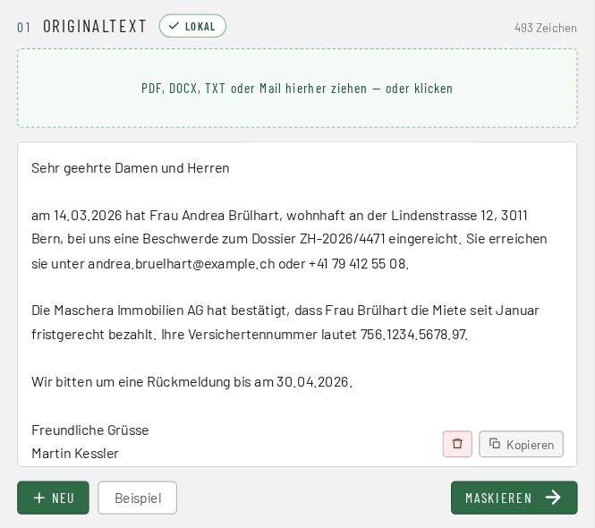
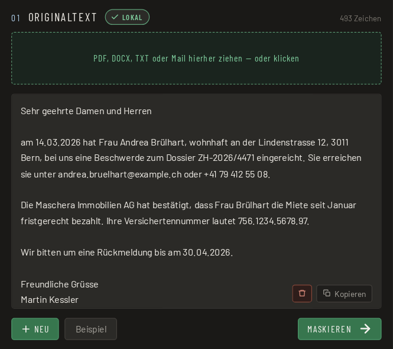
Maskieren
Jede Fundstelle wird farbig angezeigt, zusammen mit ihrer Herkunft: Prüfsumme, Muster oder Modell.
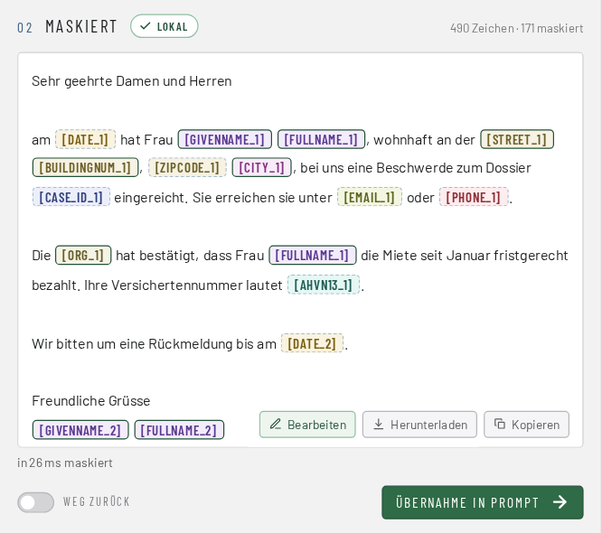
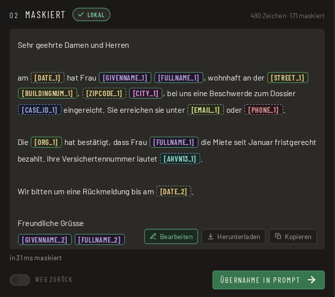
Prüfen
Du siehst, was ersetzt wurde, bevor der Text irgendwohin geht.
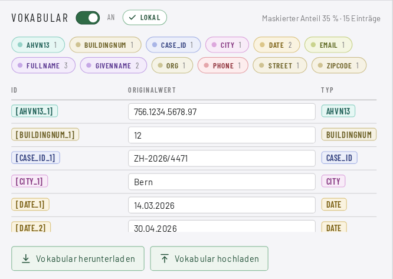
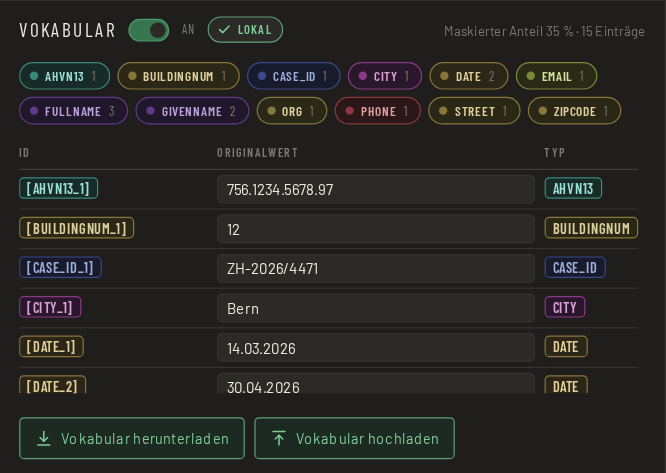
Kopieren und einfügen
Beim Dienst deiner Wahl, von Hand. Das Werkzeug schickt nichts selbst.
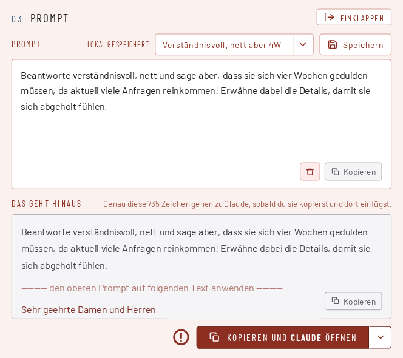
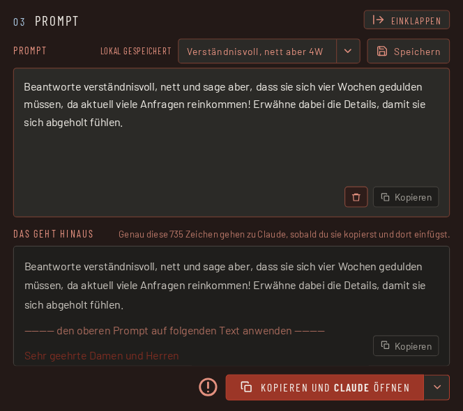
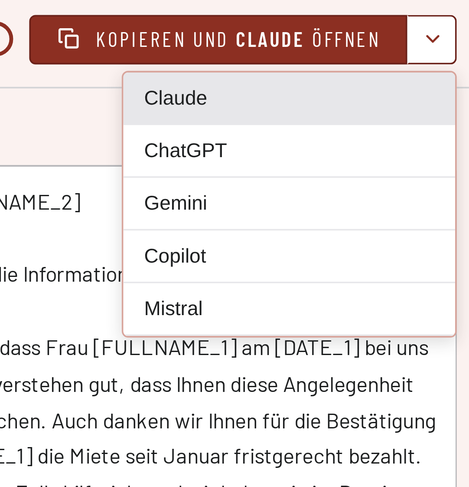
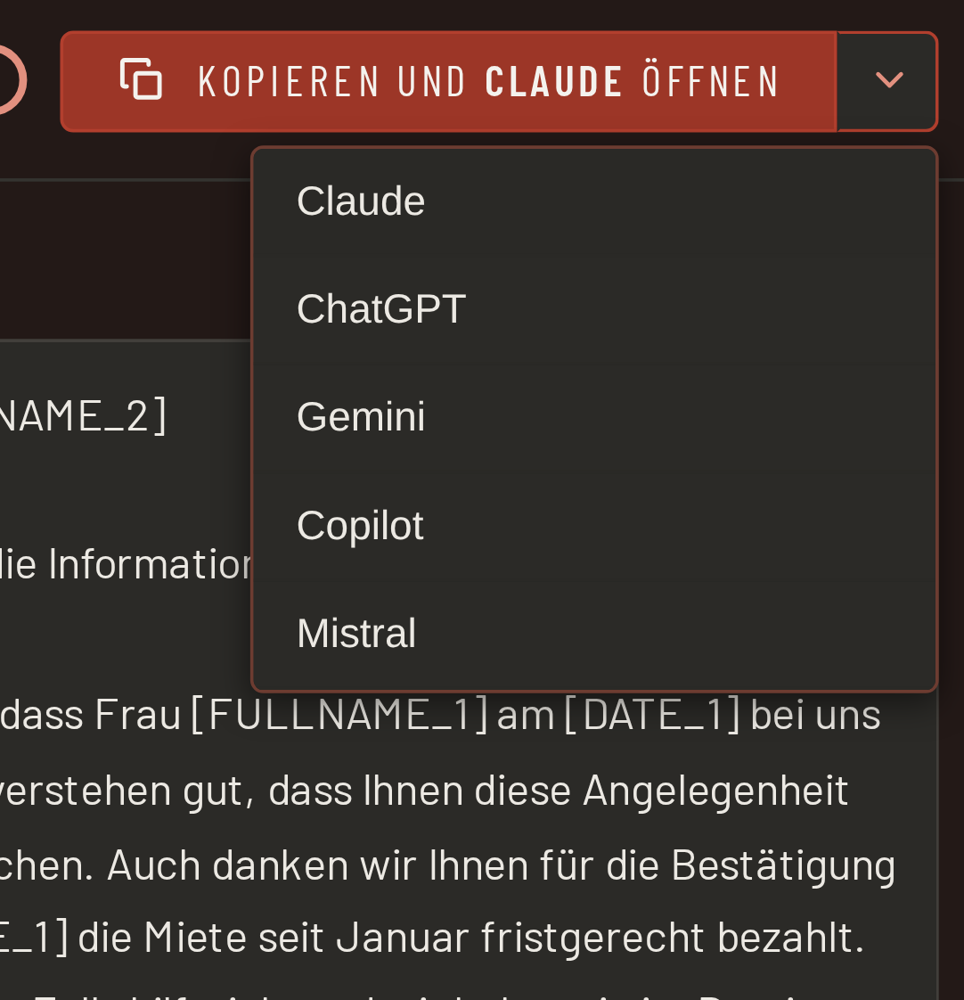
Antwort zurück einfügen
Die echten Werte kommen wieder herein.
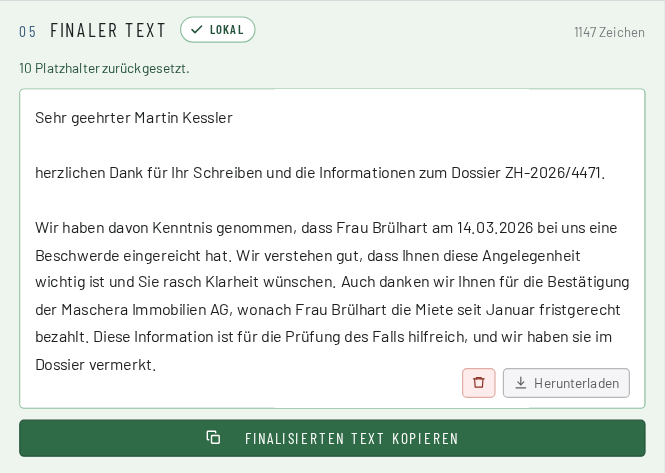
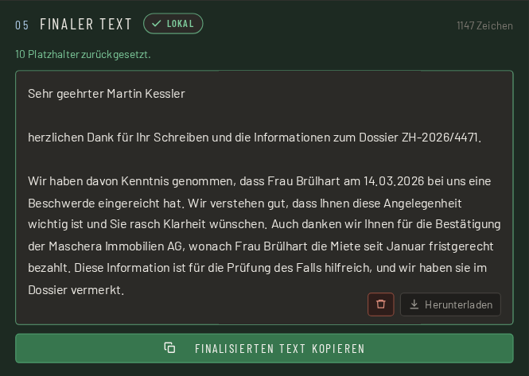
Ein leerer Befund ist keine Entwarnung. Ein gescanntes PDF ohne Textebene ergibt einen Fehler mit Begründung, nicht «keine Personendaten gefunden». Ein Werkzeug, das dort Entwarnung gibt, ist gefährlicher als eines, das gar nichts sagt.
Drei Stufen, nicht bloss «eine KI»
| Stufe | Was sie tut |
|---|---|
| 1 · Prüfsummen | AHV-Nummer, UID, IBAN, QR-Referenz, Kreditkarte, GLN. Gültige Prüfsumme → maskieren, auch wenn das Modell schweigt. Ungültige → verwerfen, auch wenn es anschlägt. |
| 2 · Muster mit Kontextanker | Telefonnummer, Postleitzahl, Kontrollschild, Ausweiskategorie, Fallnummer und weitere. Sie werden an viersprachigen Ankerwörtern erkannt und haben keinen Vorrang vor dem Modell. Dazu kommen deine eigenen Regeln: Wörter und Muster, die du selbst festlegst. Sie laufen wie die eingebauten Muster. Beispiele sind interne Fall-Nr. oder interne Dossier-Nr. etc. |
| 3 · Sprachmodell | Namen, Adressen, Berufe, Organisationen und Daten, also alles, was kein Muster hat. |
Das Modell ist 1,2 GB gross und wurde auf synthetischen Daten trainiert. Es hat nie ein echtes Dokument gesehen. Technische Angaben zum Modell.
Der wichtigste Abschnitt
MASCHERA nimmt dir die Arbeit ab, nicht die Verantwortung.
Kein Werkzeug findet jedes Personendatum. Sieh den maskierten Text an, bevor du ihn weitergibst. Dafür zeigt MASCHERA jede Fundstelle farbig und mit ihrer Herkunft.
Was «Herkunft» heisst
Jede Fundstelle zeigt, woher sie stammt: aus einer geprüften Nummer, aus einem Muster mit Kontext, oder aus dem Sprachmodell. Eine AHV-Nummer mit gültiger Prüfsumme ist sicher richtig erkannt, eine Modellvermutung verdient den zweiten Blick.
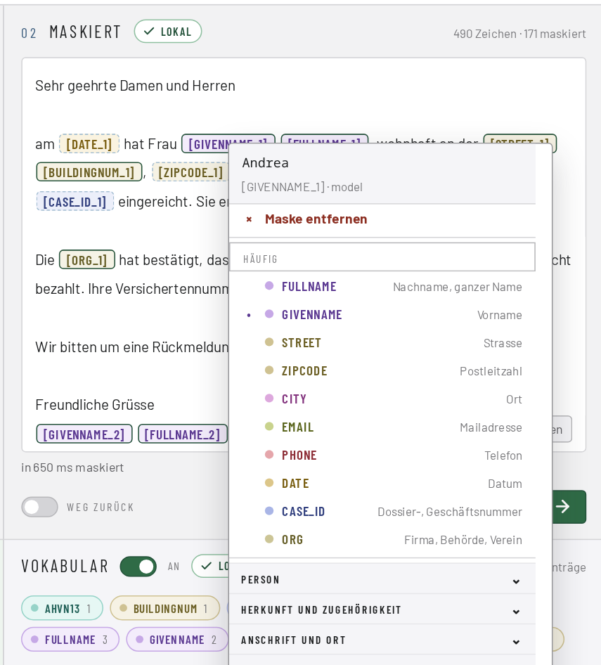
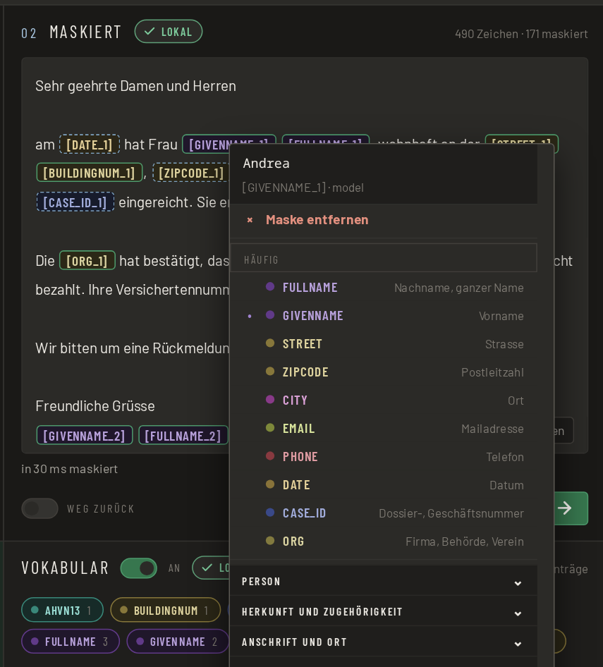
Mit einem Rechtsklick auf eine Fundstelle änderst du die Markierung: Du wählst eine andere Merkmalsart oder entfernst die Maske.
Was du tun kannst, wenn etwas fehlt
Fünf Möglichkeiten, alle in der Anwendung vorhanden.
| Von Hand nachbessern | Der maskierte Text ist bearbeitbar. Platzhalter wie [FULLNAME_1] bleiben stehen und werden am Ende zurückgewandelt. |
| Eigene Regeln | Eigene Wörter und Muster, die zusätzlich maskiert werden. Ein Projektname, ein internes Kürzel, ein Spitzname. |
| Klartext-Typen | Einzelne Merkmalsarten kannst du dauerhaft im Klartext lassen. Sie werden erkannt, aber nicht ersetzt. Wer Ortschaften stehenlassen will, stellt das einmal ein. |
| Zurückwandeln | Die Antwort des Dienstes einfügen, und die echten Werte kommen wieder herein. |
| Endgültig anonymisieren | Ohne Wörterbuch maskieren. Dann ist der Vorgang nicht mehr umkehrbar, und die Anwendung weist vorher darauf hin. |
MASCHERA kann beides: umkehrbar für die Arbeit mit einem KI-Dienst, unumkehrbar für einen Text, der so aus dem Haus geht.
Herunterladen
Welche Datei nehme ich?
Kein Anmeldeformular, keine E-Mail-Abfrage, kein Newsletter. Die Datei liegt da, man lädt sie herunter, fertig.
Linux
AppImage: eine einzige ausführbare Datei, das Modell ist mit enthalten. Herunterladen, ausführbar machen und starten. Es wird nichts installiert.
Flatpak: Das Modell (1,3 GB) wird beim ersten Start der Applikation von Hugging Face heruntergeladen.
Flatpak0,3 GBWindows
Installer für Windows 11, 64 Bit. Installiert ohne Administratorrechte, das Modell ist mit enthalten.
Windows1,4 GBServer
Docker, für den Betrieb als Dienst. Die Oberfläche öffnet sich im Browser. Das Modell ist mit enthalten. Der Server speichert nichts bei sich: kein Dokument, kein Wörterbuch, kein Protokoll. Nach der Antwort ist alles wieder vergessen.
Docker4,2 GBmacOS
Gibt es leider noch nicht. Es wird daran gearbeitet. Schaue später wieder vorbei!
In Arbeit Noch nicht verfügbarAlle Dateien liegen bei den Veröffentlichungen auf GitHub, dazu SHA256SUMS zum Prüfen.
Der Hinweis zum Modell
Das Modell ist 1,2 GB gross. Die AppImage und der Windows-Installer tragen es mit. Das Flatpak holt es einmal beim ersten Start. Es kommt aus einer benannten Quelle, wird mit einer Prüfsumme kontrolliert und erst geladen, nachdem du zugestimmt hast. Wer gerade kein WLAN hat, lehnt ab und holt es ein andermal. Danach ist alles gleich offline.
AppImage oder Flatpak?
AppImage ist eine einzige Datei: herunterladen, ausführbar machen und starten. Es wird nichts installiert. Flatpak fügt sich in die Paketverwaltung ein und aktualisiert sich mit ihr.
Beide bringen ihre eigenen Bibliotheken mit und sind damit unabhängig von der Ausgabe deiner Verteilung. Auf Arch-Systemen läuft Flatpak bestens; ein eigenes Arch-Paket gibt es darum nicht.
Wo alles andere steht
Das Technische wird dort gepflegt
Wie gut das Modell misst, wie es trainiert wurde, wie das Programm gebaut ist: Das steht dort und wird dort aktuell gehalten.
Impressum
Verantwortlich
| Name | Rodolfo Semprevivo |
|---|---|
| Land | Schweiz |
| Kontakt | über GitHub-Issues |
| Web | www.maschera.ch |
Zweck
MASCHERA ist ein Werkzeug zur lokalen Maskierung von Personendaten in Schweizer Dokumenten. Es wird als offene Software bereitgestellt.
Diese Website
Die Website wird über GitHub Pages ausgeliefert (GitHub, Inc., USA). Beim Aufruf verarbeitet GitHub technisch nötige Angaben wie die IP-Adresse in seinen Serverprotokollen; Einzelheiten stehen in der Datenschutzerklärung von GitHub. Die Website selbst setzt keine Cookies, erhebt keine Statistik und lädt nichts von fremden Servern. Die Dateien zum Herunterladen liegen ebenfalls bei GitHub.
Die Anwendung
MASCHERA bearbeitet deine Dokumente ausschliesslich auf deinem eigenen Gerät. Es werden keine Inhalte an den Herausgeber oder an Dritte übermittelt, keine Nutzungsdaten erhoben und keine Cookies gesetzt. Der Herausgeber erhält dadurch keine Kenntnis von den bearbeiteten Daten und ist für sie nicht Verantwortlicher im Sinne des DSG. Verantwortlich für die Daten bleibst du. Sobald du einen maskierten Text in ein KI-Werkzeug einfügst, gelten die Bedingungen jenes Anbieters.
Haftung
MASCHERA wird ohne Gewähr bereitgestellt. Die Erkennung von Personendaten erfolgt maschinell und ist nicht vollständig: sie kann Angaben übersehen und maskiert im Zweifel zu viel. Die Prüfung des maskierten Textes vor der Weitergabe liegt bei dir. Eine Haftung für Schäden aus der Verwendung ist im gesetzlich zulässigen Rahmen ausgeschlossen. Für die Inhalte verlinkter Seiten sind deren Betreiber verantwortlich.
Lizenz
Quellcode MIT, ausgelieferte Pakete AGPL-3.0, Modell MIT. Der Quellcode und die verwendeten Werke Dritter mit ihren Lizenzen stehen auf GitHub.